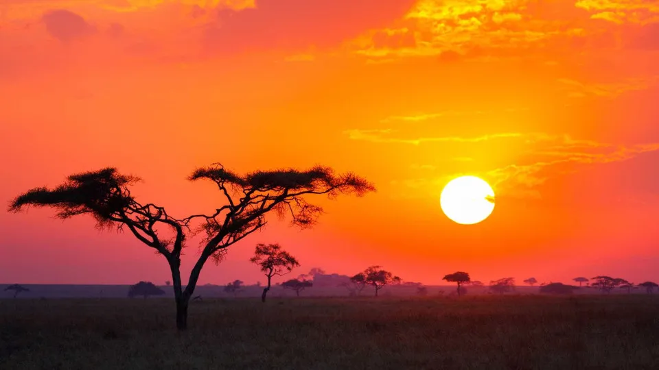
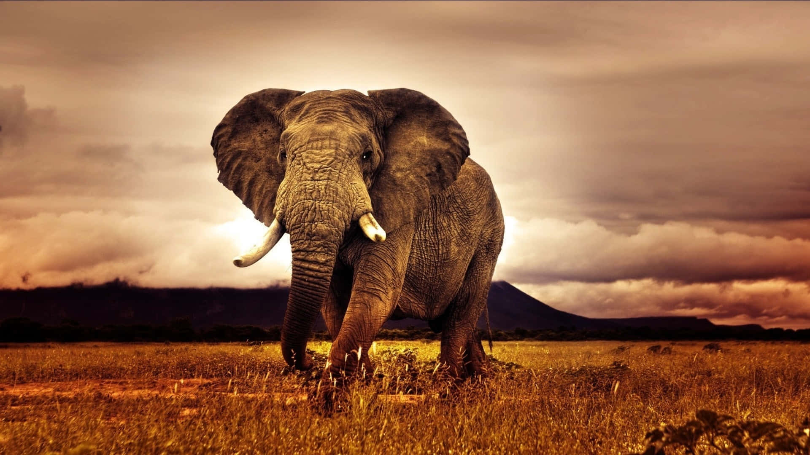
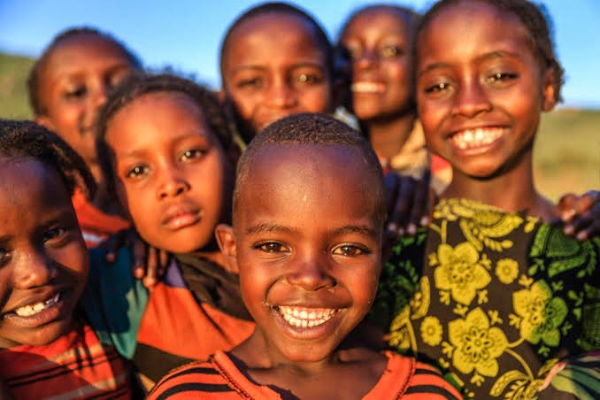
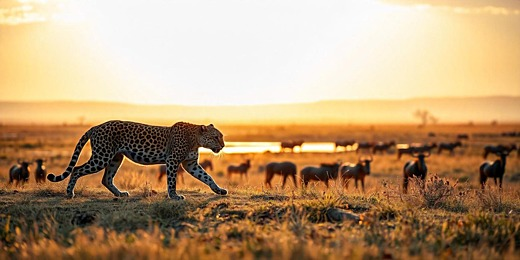

A América do Sul e a África compartilham conexões geológicas históricas, sendo parte do supercontinente Gondwana, o que explica a semelhança no contorno (litoral brasileiro e Golfo da Guiné) e tipos de rochas, embora hoje se afastem cerca de 4 cm por ano. Ambos os continentes enfrentam desafios de desenvolvimento, desigualdade social e, frequentemente, projeções cartográficas que distorcem seus tamanhos reais.
Continente Africano




A África é o terceiro maior continente do mundo, com mais de 30 milhões de km² e 54 países, sendo o "berço da humanidade". Caracteriza-se por grande diversidade étnica, paisagens que vão do deserto do Saara às savanas, e clima predominantemente tropical. A economia baseia-se na agricultura e mineração, enfrentando desafios históricos de subdesenvolvimento. Apesar de concentrar incontáveis riquezas naturais, o continente africano é um dos mais pobres do mundo. A África é banhada pelo oceano Atlântico na sua costa ocidental e pelo oceano Índico do lado oriental. Ao norte, pelos mares Mediterrâneo e Vermelho e ao sul, pelo Mar Antártico.
América do Sul